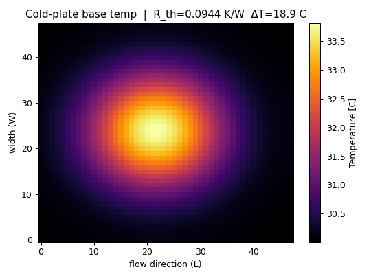
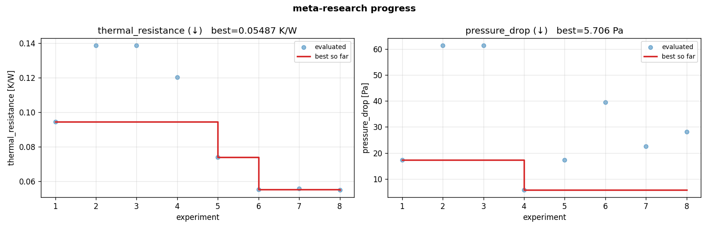
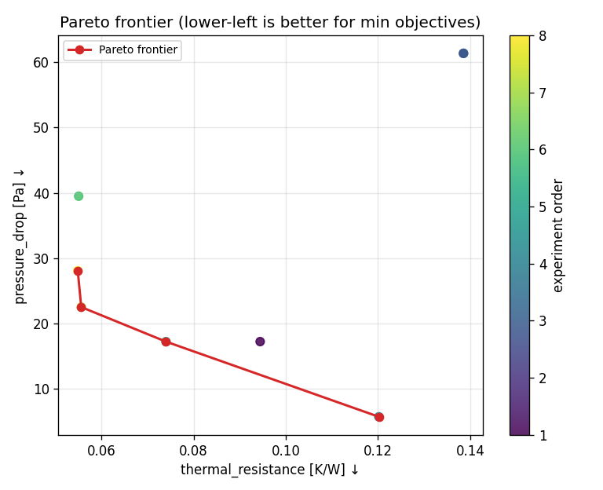
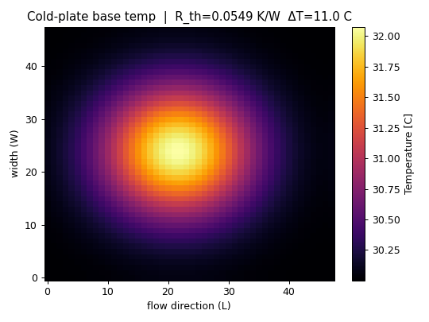

An autonomous scientific-design research agent — autoresearch's ergonomics, Meta-Harness's method, shipped as a skill.一個自主科研設計 agent —— autoresearch 的人體工學、Meta-Harness 的方法論，以 skill 形式交付。
Most of an LLM system's behaviour is decided not by its weights but by the harness around it — and most engineering design is decided not by a single best point but by a trade-off. meta-research gives a coding agent a real design problem and lets it research autonomously: it proposes a parametric design, scores it with a pluggable objective (a numerical model, a surrogate, or a real-simulation API), reads the diagnostics — including heatmaps — back, and keeps a multi-objective Pareto frontier in git as an append-only experience ledger. You program it the way you program autoresearch: by editing Markdown and fixed Python, not by touching the loop.
一個 LLM 系統的行為，多半不是由權重決定，而是由它外圍的 harness 決定；而多數工程設計，也不是由單一最佳點決定，而是由取捨決定。meta-research 把一個真實設計問題交給 coding agent，讓它自主研究：提出參數化設計、用可插拔的目標函式評分（數值模型、surrogate、或真實模擬 API）、把診斷（包含熱力圖）讀回來，並把多目標的 Pareto 前緣維護在 git 這個 append-only 的經驗帳本裡。你像在 autoresearch 那樣「程式設計」它——編輯 Markdown 與固定的 Python，而不是去碰迴圈。
A frozen model can succeed or fail on the same task depending entirely on what its surrounding code chooses to store, retrieve, and show it. That surrounding code is the harness. Engineering R&D has the same shape: the simulator is fixed ground truth, and the win comes from which design you try next.
同一個被凍結的模型，在同一個任務上會成功或失敗，完全取決於外圍程式碼決定「存什麼、取什麼、給它看什麼」。那段外圍程式碼就是 harness。工程研發是同樣的形狀：模擬器是固定的 ground truth，勝負來自你下一個試什麼設計。
The motivating picture is concrete: you look at a thermal heatmap of a liquid-cooling cold plate and ask how should the fins inside be shaped, sized, and placed? That is not a one-shot question — it is a loop of hypothesise → simulate → look at the field → revise. meta-research automates exactly that loop, for any design problem with adjustable variables and a measurable objective.
具體的畫面是這樣：你看著一張水冷頭的熱力圖，問裡面的鰭片該怎麼設計、多大、擺哪？這不是一次性問題——它是一個「提假設 → 模擬 → 看溫度場 → 修正」的迴圈。meta-research 把這個迴圈自動化，適用於任何「有可調變數 + 有可量測目標」的設計問題。
meta-research is deliberately a fusion of two existing projects. It keeps the ergonomics of Karpathy's autoresearch and adopts the method of Stanford's Meta-Harness paper.
meta-research 刻意是兩個既有專案的融合：保留 Karpathy 的 autoresearch 的人體工學，採用 Stanford Meta-Harness 論文的方法論。
The one deliberate divergence: autoresearch keeps a single editable file and uses git keep/discard (advance or reset). meta-research keeps a whole population of designs and is strictly append-only — a regressed design is still committed, because its trace is exactly the data the agent reads next.
唯一刻意的分歧：autoresearch 維護單一可編輯檔，用 git 的 keep/discard（前進或 reset）。meta-research 維護一整個設計族群，且嚴格 append-only——退步的設計仍然會被 commit，因為它的軌跡正是 agent 下一步要讀的資料。
Meta-Harness frames a system's quality as a function of two things: a fixed base capability, and a searchable harness around it. It then runs an outer loop in which a coding-agent proposer reads the entire history of prior attempts off a filesystem — source, scores, and execution traces — and proposes the next candidate. meta-research carries that method over to engineering design, where the "base capability" is a fixed simulator and the "harness" is the design itself plus the reasoning that produced it.
Meta-Harness 把一個系統的品質看成兩件事的函數：固定的基礎能力，加上外圍可搜尋的 harness。接著跑一個外層迴圈：由 coding-agent proposer 從檔案系統讀回所有過去嘗試的完整歷史——原始碼、分數、執行軌跡——再提出下一個候選。meta-research 把這套方法搬到工程設計：這裡的「基礎能力」是固定的模擬器，「harness」就是設計本身與產生它的推理。
# seed the population for d in BASELINES: r = evaluate(d); record(d, r); frontier = Pareto(all) loop forever (until interrupted): 1 E = read ALL prior experience # results.tsv · frontier.json · git log # + prior heatmaps + hypotheses 2 h = a falsifiable hypothesis on ONE mechanism, grounded in E 3 d = write designs/<name>.py # change one mechanism vs a frontier design 4 r = Evaluator.evaluate(d) # fixed ground truth — never edited 5 record(d, h, r, traces); frontier = Pareto(all); git commit # append-only 6 read r + the new heatmap # the loop closes here → informs step 1 return Pareto frontier
The proposer's edge comes from diagnosis: to know why a design underperformed, it has to see where it failed — the temperature field, the per-mechanism breakdown, the raw numbers. Compressing history into a one-line summary throws away exactly that signal. So meta-research persists the full execution trace of every candidate and lets the agent re-read it (including images) on the next turn.
proposer 的優勢來自診斷：要知道一個設計為何表現不好，它得看見它哪裡失敗——溫度場、各機制的拆解、原始數字。把歷史壓成一行摘要，丟掉的正是這個訊號。所以 meta-research 保存每個候選的完整執行軌跡，讓 agent 下一輪能把它（包含圖像）讀回來。
Unlike an evolutionary loop that mutates a chosen parent, meta-research imposes no selection rule: the agent may inspect any prior candidate via git show and build on whichever combination it judges most promising. The frontier informs, but does not constrain, the next move.
不同於「挑一個 parent 再變異」的演化式迴圈，meta-research 不強加任何選擇規則：agent 可透過 git show 檢視任何過去候選，並在它判斷最有希望的組合上往前。前緣提供資訊，但不限制下一步。
There is no Python orchestrator and no subprocess driver. You open a coding agent in the experiment directory, point it at program.md, and the agent itself runs the loop. The framework only provides deterministic tools — meta-research eval | seed | frontier | progress — and a skill that carries the methodology.
沒有 Python orchestrator、沒有 subprocess 驅動。你在實驗目錄裡開一個 coding agent，叫它看 program.md，然後由 agent 本人跑迴圈。框架只提供確定性工具——meta-research eval | seed | frontier | progress——以及一個承載方法論的 skill。
The hinge that makes the framework general is a single Evaluator contract. The same loop works whether your objective is computed in-process, predicted by a model you trained, or returned by a real solver over the network — you choose in prepare.py, in one line.
讓框架「通用」的關鍵，是單一的 Evaluator 合約。不論你的目標是行程內算出來的、你訓練的模型預測的、還是網路上真實求解器回傳的，同一個迴圈都成立——你在 prepare.py 裡用一行選擇。
The framework is a reusable Python package (the engine) plus a skill. Everything depends on one tiny, frozen contract — five types — so domain code never imports the framework's internals. The two protocols below are the entire surface a new domain must satisfy.
框架是一個可重用的 Python 套件（引擎）加上一個 skill。一切都依賴一份極小、凍結的合約——五個型別——所以領域程式碼從不需要 import 框架內部。下面兩個 protocol 就是一個新領域要滿足的全部介面。
# --- data --- @dataclass(frozen=True) class Objective: name: str; direction: str="min"; unit: str=""; weight: float=1.0 @dataclass(frozen=True) class DesignSpec: params: dict[str,Any]; artifacts: dict[str,str]={}; notes: str="" @dataclass(frozen=True) class EvalResult: scores: dict[str,float]; feasible: bool=True metadata: dict[str,Any]={}; artifacts: dict[str,str]={}; error: str|None=None # --- the two pluggable protocols --- class Candidate(Protocol): # the design module the agent edits name: str def build(self) -> DesignSpec: ... class Evaluator(Protocol): # numerical | surrogate | api objectives: list[Objective] def evaluate(self, design: DesignSpec, out_dir: Path) -> EvalResult: ...
autoresearch drives a single scalar (validation bits-per-byte). Engineering design rarely collapses to one number: lowering thermal resistance usually raises pumping pressure. So meta-research keeps a Pareto frontier — the set of designs that are not beaten on every objective at once. Each frontier member is a different, legitimate trade-off; the loop's job is to push that frontier toward the better corner.
autoresearch 驅動單一純量（validation bits-per-byte）。工程設計很少能壓成一個數字：降低熱阻通常會抬高壓降。所以 meta-research 維護一條 Pareto 前緣——一組「不會在每個目標上同時被打敗」的設計。前緣上每個成員都是不同而合理的取捨；迴圈的工作就是把這條前緣往更好的角落推。

progress.png analog, one panel per objective: every evaluated design (dots) and the best-so-far (red). Thermal resistance falls 0.094 → 0.074 → 0.055 K/W over the session. autoresearch progress.png 的對應物，每目標一張：所有評估過的設計（點）與當前最佳（紅線）。熱阻在本回合從 0.094 → 0.074 → 0.055 K/W 下降。
Following Meta-Harness, everything is stored — not summaries. Each evaluated design becomes an experience bundle: its verbatim source, the agent's reasoning, the scores, and the execution traces (heatmaps, raw fields, breakdown). git versions these as an append-only ledger: one commit per iteration, never reset. git log is a scannable index; git show <sha>:…/design.py recovers any past candidate in full.
沿用 Meta-Harness，全部存下來——不是摘要。每個評估過的設計成為一個經驗 bundle：逐字原始碼、agent 的推理、分數、以及執行軌跡（熱力圖、原始場、機制拆解）。git 把這些版本化成 append-only 帳本：每輪一個 commit，永不 reset。git log 是可掃描的索引；git show <sha>:…/design.py 能完整還原任何過去的候選。
All formats below are real output from the shipped example. The bundle is the source of truth; results.tsv and frontier.json are derived views recomputed from it.
以下格式皆為內附範例的真實輸出。bundle 是真實來源；results.tsv 與 frontier.json 是由它重算出的衍生視圖。
experience/000_straight_fins/ ├─ design.py # verbatim copy of the design module ├─ design_spec.json # the built DesignSpec (params) ├─ hypothesis.md # reasoning + front-matter (status filled at eval time) ├─ result.json # scores + metadata + status └─ trace/ ├─ heatmap.png # the diagnostic the agent re-reads ├─ fields.npz # raw temperature field └─ breakdown.json # R_conv · R_caloric · Re · Nu · fin_efficiency · …
---
name: straight_fins
iteration: 0
axis: baseline
parent: ""
expected: seed population (Phase 0)
status: frontier # frontier | dominated | infeasible | crash
---
Baseline 'straight_fins' evaluated to seed the Pareto frontier.
iter name status feasible thermal_resistance pressure_drop hypothesis 0 straight_fins frontier true 0.073998080514198 17.22054649… seed population (Phase 0) 1 pin_fins dominated true 0.138538699308707 61.36574074… seed population (Phase 0)
{
"objectives": [{"name":"thermal_resistance","direction":"min","unit":"K/W"},
{"name":"pressure_drop","direction":"min","unit":"Pa"}],
"pareto": [
{"name":"straight_fins","iteration":0,
"scores":{"thermal_resistance":0.07399…,"pressure_drop":17.2205…},
"metadata":{"R_conv":0.0548,"R_caloric":0.0145,"Re":239.0,"Nu":5.99,
"fin_efficiency":0.587,"mass_g":100.4, …}}
],
"best_per_objective":{"thermal_resistance":{"name":"straight_fins","value":0.07399…},
"pressure_drop":{"name":"straight_fins","value":17.2205…}}
}
iter00 straight_fins: thermal_resistance=0.0739981 pressure_drop=17.2205 [frontier] — seed population (Phase 0) iter01 pin_fins: thermal_resistance=0.138539 pressure_drop=61.3657 [dominated] — seed population (Phase 0)
The commit subject is the one-line index; the substance lives in the files the commit touches, recoverable in full with git show.
commit 標題是一行索引；實質內容在該 commit 改動的檔案裡，用 git show 可完整還原。
The shipped example optimises the fins inside a 40×40×20 mm copper cold plate at 200 W and 1 L/min of water. Two objectives: thermal resistance (K/W, ↓) and pressure drop (Pa, ↓). The diagnostic the agent reads each iteration is the base-plate temperature field.
內附範例最佳化一個 40×40×20 mm 銅製水冷頭內部的鰭片，工況 200 W、1 L/min 水。兩個目標：熱阻（K/W，↓）與壓降（Pa，↓）。agent 每輪讀的診斷，就是底板溫度場。


The session's Pareto frontier — the deliverable you wake up to — spans the full trade-off:
本回合的 Pareto 前緣——你早上起來看到的交付物——橫跨整個取捨：
| design / 設計 | thermal resistance ↓ | pressure drop ↓ |
|---|---|---|
| sparse_straight | 0.120 K/W | 5.7 Pa 最省泵 |
| straight_fins （基準） | 0.074 K/W | 17.2 Pa |
| tall_dense | 0.056 K/W | 22.5 Pa |
| microfin | 0.055 K/W 最低熱阻 | 28.1 Pa |
These numbers come from a self-contained numpy surrogate (trend-correct, not a validated CFD). It exists so the example runs out of the box — swap in ApiSolverEvaluator to drive a real solver. All figures on this page were produced by the framework itself.
這些數字來自一個自包含的 numpy 代理模型（趨勢正確，非經驗證的 CFD）。它的存在是為了讓範例開箱即跑——換成 ApiSolverEvaluator 即可驅動真實求解器。本頁所有圖都是框架自己跑出來的。
| aspect / 面向 | autoresearch | meta-research |
|---|---|---|
| domain / 領域 | LLM pre-training語言模型預訓練 | any engineering/scientific design任意工程／科學設計 |
| editable artifact / 可編輯產物 | single train.py單一檔，原地修改 | designs/ — a population設計族群（複數） |
| evaluator / 評估器 | fixed evaluate_bpb寫死的評估函式 | pluggable: numerical / surrogate / API可插拔三後端 |
| objective / 目標 | single scalar val_bpb單一純量 | multi-objective Pareto frontier多目標 Pareto 前緣 |
| keep / discard | git advance / reset前進或 reset 丟棄 | append-only; Pareto membership只增不刪；以前緣取捨 |
| history / 歷史 | results.tsv扁平紀錄 | full experience bundles + ledger完整經驗 bundle + 帳本 |
| diagnostic loop / 診斷閉環 | scalar metric only只有純量指標 | agent re-reads heatmaps/fieldsagent 讀回熱力圖／場 |
| delivery / 交付形式 | a repo + program.md一個 repo + program.md | a reusable Claude Code skill可重用的 skill |
| progress.png | one curve單一曲線 | per-objective curves + Pareto plot每目標曲線 + 前緣圖 |
| shared spirit / 共同精神 | config-as-code · markdown-as-program · the agent runs the loop · never stop · 設定即程式碼 · markdown 即程式 · agent 自走 · 永不停 | |
pip install -e meta-research.安裝引擎一次：pip install -e meta-research。meta-research init coldplate --from water_cooling — copies the example, drops the skill into .claude/skills/, and git inits with an initial commit, ready to run.建立實驗：meta-research init coldplate --from water_cooling——複製範例、把 skill 放進 .claude/skills/、並 git init + 初始 commit，立即可跑。meta-research seed --commit.seed 基準設計：meta-research seed --commit。program.md." It loads the skill and starts the loop — proposing designs, reading heatmaps, committing, never stopping until you interrupt.在該目錄開 coding agent，說「照 program.md 跑」。它載入 skill 並開始迴圈——提設計、讀熱力圖、commit，未被打斷前不停。progress.png.起床看到一條 Pareto 前緣、完整的 git 帳本、以及 progress.png。DESIGN.md is the authoritative architecture contract; every module is built against it.合約。repo 內的 DESIGN.md 是權威的架構合約；每個模組都依它構建。Python 3.10+; runtime deps numpy + matplotlib; optional extras for surrogate (joblib, onnxruntime) and api (requests). 84 tests pass. The numerical water-cooling model is a trend-correct surrogate built from standard textbook correlations, not a validated CFD solver.
Python 3.10+；執行相依 numpy + matplotlib；surrogate（joblib、onnxruntime）與 api（requests）為選用 extras。84 條測試通過。水冷數值模型是以標準教科書關聯式建構的趨勢正確代理，非經驗證的 CFD 求解器。